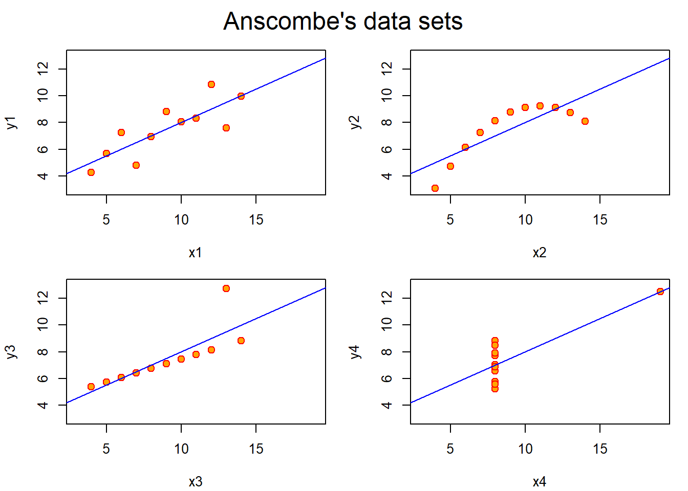

# We can call to the needed libraries or load the data sets we are going to use.
# echo, message, warning =FALSE because we do not want messages, warnings and Rcode in the final output
library(knitr) #for nice tables
library(stats); library(graphics) #needed for the data set and some statisticsIn the first session we learnt how to produce formatted output automatically from a .Rmd file that combines text and some R code. For doing so, we introduced R notebook and Rmarkdown. R notebook is an R Markdown document with chunks that can be executed independently and interactively, with output visible immediately beneath the input. Finally, we understood the workflow (Knitr+PANDOC) that produces the final output.
This is an example of Rmarkdown document that you could use as starting point or as a template for future projects, we tried to use mostly all the commands we explained during the session. You can download the file here and the Cheat Sheet.
All the content contained is based on Wikipedia and the code was taken from the R help of the data set “anscombe”.
Anscombe’s quartet comprises four datasets that have nearly identical simple descriptive statistics, yet appear very different when graphed. Each dataset consists of eleven points in \(\mathbb{R}^2\). They were constructed in 1973 by the statistician Francis J. Anscombe to demonstrate both the importance of graphing data before analyzing it and the effect of outliers on statistical properties. He described the article as being intended to attack the impression among statisticians that “numerical calculations are exact, but graphs are rough”. For more details you can find his article Graphs in statistical analysis (1973) published in the journal American Statistician.
Here we load the data set and print the variables using the kable function from knitr package. One could observe how the values of all the variables look roughly equal. However, the small disparities make a big difference.
data("anscombe")
kable(anscombe, caption = "Here we have our data set")| x1 | x2 | x3 | x4 | y1 | y2 | y3 | y4 |
|---|---|---|---|---|---|---|---|
| 10 | 10 | 10 | 8 | 8.04 | 9.14 | 7.46 | 6.58 |
| 8 | 8 | 8 | 8 | 6.95 | 8.14 | 6.77 | 5.76 |
| 13 | 13 | 13 | 8 | 7.58 | 8.74 | 12.74 | 7.71 |
| 9 | 9 | 9 | 8 | 8.81 | 8.77 | 7.11 | 8.84 |
| 11 | 11 | 11 | 8 | 8.33 | 9.26 | 7.81 | 8.47 |
| 14 | 14 | 14 | 8 | 9.96 | 8.10 | 8.84 | 7.04 |
| 6 | 6 | 6 | 8 | 7.24 | 6.13 | 6.08 | 5.25 |
| 4 | 4 | 4 | 19 | 4.26 | 3.10 | 5.39 | 12.50 |
| 12 | 12 | 12 | 8 | 10.84 | 9.13 | 8.15 | 5.56 |
| 7 | 7 | 7 | 8 | 4.82 | 7.26 | 6.42 | 7.91 |
| 5 | 5 | 5 | 8 | 5.68 | 4.74 | 5.73 | 6.89 |
Let compute some statistics. We are going to see how the results for each variable are more or less similar.
stat<-summary(anscombe)
kable(stat[,5:8], caption = "Descriptive statistics")| y1 | y2 | y3 | y4 | |
|---|---|---|---|---|
| Min. : 4.260 | Min. :3.100 | Min. : 5.39 | Min. : 5.250 | |
| 1st Qu.: 6.315 | 1st Qu.:6.695 | 1st Qu.: 6.25 | 1st Qu.: 6.170 | |
| Median : 7.580 | Median :8.140 | Median : 7.11 | Median : 7.040 | |
| Mean : 7.501 | Mean :7.501 | Mean : 7.50 | Mean : 7.501 | |
| 3rd Qu.: 8.570 | 3rd Qu.:8.950 | 3rd Qu.: 7.98 | 3rd Qu.: 8.190 | |
| Max. :10.840 | Max. :9.260 | Max. :12.74 | Max. :12.500 |
kable(round(t(sapply(anscombe, var)[5:8]),digits = 2), caption = "Variances")| y1 | y2 | y3 | y4 |
|---|---|---|---|
| 4.13 | 4.13 | 4.12 | 4.12 |
Here we go with some formulas, if you need help with some command just look for LATEX math mode in internet or check this web.
Given two variables \(Y\) and \(X\), we assume that the variables follow a linear relationship such that \[Y = \beta_0+\beta_1*X+\epsilon,\] being \(\epsilon\) a independent and identically distributed random variable from a normal distribution \(\epsilon \sim N(0,1)\). We can estimate the parameters by minimizing the mean square error, i.e. \[\min_{ \{\beta_0,\beta_1\}} \sum_{i=1}^n (y_i-\beta_0-\beta_1*x_i)^2,\] ending up with \[\hat{\beta_1}=\frac{Cov(X,Y)}{V(X)},\] \[\hat{\beta_0}= \bar{Y}-\bar{X}*\beta_1.\]
In the following code chunk, the linear regression model are adjusted to the 4 variables. The parameters, standar errors, t-values and p-values are roughly the same.
## now some "magic" to do the 4 regressions in a loop:
ff <- y ~ x
mods <- setNames(as.list(1:4), paste0("lm", 1:4))
for(i in 1:4) {
ff[2:3] <- lapply(paste0(c("y","x"), i), as.name)
mods[[i]] <- lmi <- lm(ff, data = anscombe)
}
kable(lapply(mods[1:2], function(fm) coef(summary(fm))), caption='Regressions')
|
|
kable(lapply(mods[3:4], function(fm) coef(summary(fm))), caption='Regressions')
|
|
A simple plot can bring to light that the 4 variables are very different one from another.
op <- par(mfrow = c(2, 2), mar = 0.1+c(4,4,1,1), oma = c(0, 0, 2, 0))
for(i in 1:4) {
ff[2:3] <- lapply(paste0(c("y","x"), i), as.name)
plot(ff, data = anscombe, col = "red", pch = 21, bg = "orange", cex = 1.2,
xlim = c(3, 19), ylim = c(3, 13))
abline(mods[[i]], col = "blue")
}
mtext("Anscombe's data sets", outer = TRUE, cex = 1.5)
“Numerical calculations are exact, but graphs are rough”.